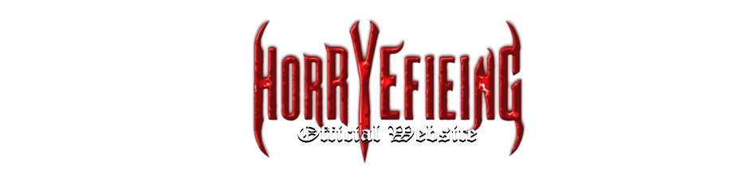

HORRYEFIEING
About
HORRYEFIEING is a survival/action horror videogame series first concieved by Alaric Jaxxin in 1998. It was insprired by numerous different videogames, movies and real-life experiences that lead to it's original concept, which, over the past 24 years has evolved into what it is today. It was inspired by several videogames at the time, most notably: Nightmare Creatures, Evil Dead: Hail to the King, Doom, Alone In The Dark: The New Nightmare and Koudelka. Mostly the atmosphere, but other concepts also. Movies that most inspired the Horryefieing Universe were The Evil Dead, Demons, The Exorcist, Night Of The Living Dead and various other horror works It also notably took some inspiration from the Buffy and Charmed universes. In 2000, Alaric teamed up with his high-school friend Jonathan Franklin to rewrite certain elements of the concept which, according to Jonathan, were far too similar to things that inspired its creation ie; The Evil Dead being the most obvious. While these inspiriations still remain in the Horryefieing Universe today, they have been reworked to be more original than they initially were. Jonathan created the concept of The Shadow Realm, a mysterious dimension out of time and space that acts as home to the demons, the concept of the Audijante Sphere being a yin-yang themed device (instead of a book that was in Alaric's original version, though the book is still in the lore as a companion to the sphere), and Jonathan also replaced the main force of evil from Satan to new demonic lord Toldos. These alterations have remained ever since, thought Alaric has evolved the concept far further since 2000. The Horryefieing Universe finally came to life in late 2024 with the release of High-Rise, a small survival horror game that takes place between two of the main games entries as an introduction to the games "horryefieing" world.